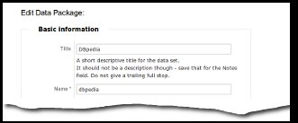
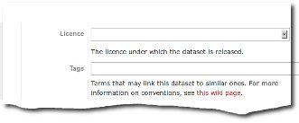
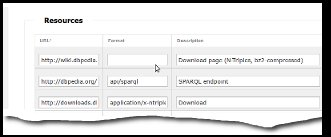
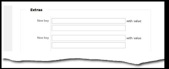

How do I add a data set to Data Hub or edit an existing data set?
- Please register with Data Hub before editing or adding any packages.
- Please confirm that the data set does not already exist on CKAN before adding a new data set.
- Add or edit the data set and provide as much additional information as possible as described below. This information is made available via the Data Hub API and can be used by search engines or data consumers to find new datasets to which to link. Furthermore, through the state-of-the-lod-cloud page it will help the community to know more about the development state of the Web of Linked Data.
- Please tag newly added data sets with
lod. - If you are not aware of any in- or outlinks, tag it with
lodcloud.nolinks.
LOD Cloud Diagram Compliance Levels
Level 1 (basic)
Please provide the following basic information about the data set:
CKAN / Basic Information
| Field name | Description | Format/Examples |
|---|---|---|
| Name | Unique ID for the data set on CKAN | [a-z0-9-]+ "my-dataset" |
| Title | Full name of the data set | "My Dataset" |
| URL | Link to data set homepage | http://example.com/my-ds |
| Author | Name of publishing org and/or person | "Talis (Leigh Dodds)" |
| Author email Maintainer email | Contact email | leigh@ldodds.com |
Data Hub / Basic Information / Tags
| Tag | Purpose |
|---|---|
lod |
Identifies the data set as Linked Data |
Level 2 (minimal)
Data Hub / Basic Information / Tags
Please provide a topic tag for the data set. We will use the topic information to color the LOD cloud later.
| Tag | Purpose |
|---|---|
<topic>
| One of:
|
Data Hub / Resources
Provide a link to an example URI in the Resources section. Example URIs help people to get a feel for your data before they decide to use it.
| What | Format | Description |
|---|---|---|
| RDF example link | Any of: example/rdf+xmlexample/turtleexample/ntriplesexample/x-quadsexample/rdfaexample/x-trig | Link to an example data item within the data set in the corresponding format (e.g. RDF/XML) |
Provide links to the data set download files (dumps) or the SPARQL endpoint. Download files relieve your server from strong crawling/querying activity for people interested in bulk loading (e.g. indexing) your dataset. SPARQL endpoints allow people to select a subset of their interest through a query.
| URL | Format | Description |
|---|---|---|
| SPARQL endpoint | api/sparql
| SPARQL endpoint |
| Direct link to each RDF download file (preferred) | Any of: application/rdf+xmltext/turtleapplication/x-ntriplesapplication/x-nquadsapplication/x-trig | Download |
| Download page with list of downloads (accepted) | - | Download (for multiple files) |
Data Hub / Extras - via "Add more information (Groups, authors etc)"
Please provide size and linkage information. These estimates will be compared with automatically estimated numbers for the sake of quality assessment and graphically displaying your dataset on the cloud.
| New key | With value | Format/Examples |
|---|---|---|
| triples | Approximate size of the data set in RDF triples | 100000, 62345123 |
| links:xxx | Number of RDF links pointing at data set xxx. Please provide separate links xxx statements for each data set linked to | 20000 |
| New key | With value | Format/Examples | sparql_graph_name | Named graph in SPARQL store (if used by the SPARQL endpoint) | http://species.geospecies.org |
|---|---|---|
Level 3 (complete)
Please provide the following additional information about the data set.
Data Hub / Basic Information
| Field name | Description | Format/Examples |
| Version | Last modification date or version of the data set | "2010-04 (3.5)", "2006", "beta" |
| Notes | Description of the data set | some free text |
| License | Standard license drop-down | OSI approved::MIT license |
Data Hub / Extras - via "Add more information (Groups, authors etc)"
| New key | With value | Format/examples |
| shortname | Short name for LOD bubble | "NY Times" |
| license_link | Custom license link | http://example.com/so-sue-me |
| namespace | Instance namespace | http://dbpedia.org/resource/ |
Data Hub / Resources
Links (other than dereferenceable URIs) that enable alternative access to the data set (e.g., via downloads or SPARQL endpoints) should be specified in the Resources section of the CKAN entry form. Please also provide links to the voiD description or Semantic Web Sitemap describing the data set.
| Purpose | Format | Description |
| voiD file | meta/void | voiD description |
| XML Sitemap | meta/sitemap
| XML Sitemap |
| RDF Schema | meta/rdf-schema
| Download link to RDF/OWL Schema used by the data set (in addition to having dereferenceable vocabulary URIs) |
| Vocabulary Mappings, e.g., OWL, RDFS, RIF, R2R | mapping/<format>
|
If the data set provides vocabulary mappings to other vocabularies (owl:equivalentClass, owl:equivalentProperty, rdfs:subClassOf, and/or rdfs:subPropertyOf links), provide a link to the mapping file in the Downloads & Resources section, using the following format: mapping/<format>. Replace <format> with the mapping/rule language used, like R2R or RIF. |
Data Hub / Basic Information / Tags
Please provide provenance and vocabulary metadata for this dataset. Please list the vocabularies used by the data set so that the community can get an overview of which vocabularies are commonly used on the Web of Linked Data.
Linked Data published on the Web should be as self-describing as possible in order to make it easier for clients to understand and use the data. Important aspects of self-descriptiveness are making vocabulary terms dereferenceable according to the best practices described in Publishing RDF Vocabularies, using terms from common vocabularies and providing vocabulary mappings for proprietary vocabulary terms. In order to allow the community to get an overview which data sets implement these best practices, please tag your data set accordingly.
| Tag | Purpose |
|---|---|
One of: no-proprietary-vocabderef-vocabno-deref-vocab |
The tag no-proprietary-vocab indicates that your data set does not use a proprietary vocabulary (defined within your top-level domain). The other two tags indicate that your dataset uses proprietary vocabulary terms (the ones that are defined within your top-level domain) and they are (deref-vocab) or are not (no-deref-vocab) dereferenceable according to the best practices for Publishing RDF Vocabularies
|
vocab-mappings
| Indicates whether mappings for proprietary vocabulary terms are provided (by setting owl:equivalentClass, owl:equivalentProperty, rdfs:subClassOf, and/or rdfs:subPropertyOf links, or publish mapping expressed as RIF rules or using the R2R Mapping Language).
|
provenance-metadata
| Indicates whether the data set provides provenance meta-information (creator of the data set, creation date, maybe creation method) as document meta-information or via a voiD description. For instance, using the dc:creator or dc:date properties.
|
license-metadata
| Indicates whether the data set provides licensing meta-information as document meta-information or via a voiD description. For instance, using the dc:rights property.
|
published-by-producer
| Indicates whether the data set is published by the original data producer or a third party. |
limited-sparql-endpoint
| Indicates whether the SPARQL endpoint is not serving the whole data set. |
format-<prefix>
| A vocabulary used by the data set, e.g., format-skos, format-dc, format-foaf
| lodcloud.nolinks
| Data set has no external RDF links to other datasets. |
lodcloud.unconnected
| Data set has no external RDF links to or from other datasets. |
lodcloud.needsinfo
| The data provider or data set homepage do not provide mininum information (and information can't be determined from SPARQL endpoint or downloads). |
lodcloud.needsfixing
| The dataset is currently broken. Provide details in the Notes. |
Level 4 (reviewed and added to lodcloud group)
The data set has been reviewed and added to the lodcloud group.
Please check it still for missing information and update those if needed.